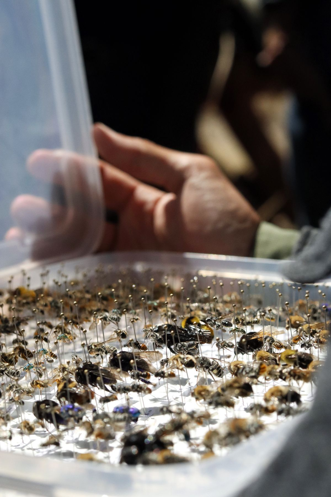

03 · The practice
An identification, made carefully, is the whole job.
Dr Ruth Adler came to casework from taxonomy, and it shows in the right order of priorities: in this practice, the name of the insect comes before any arithmetic built on it.
She read entomology at university, then spent nine years in a national insect collection — the unglamorous discipline of keys, microscopes and reference specimens, where an identification is a claim other specialists can check. Casework began in 2009 with a single instruction from a county force, and the practice has stayed deliberately small since: one expert, one laboratory, a reference archive of more than 5,200 verified specimens, and a caseload capped so that every statement can be written by the person who did the work.
The archive in the practice's name is literal. Retained specimens from closed files are kept, accessioned and audited — because an estimate is only ever as good as the identification underneath it, and identifications, like everything else in science, are sometimes wrong. The practice's most instructive file is the one where its own was: it is published, at process level, as case file CA-2019-114.
Credentials, stated plainly: doctorate in entomology; fellowship of the Royal Entomological Society; seventeen years of instructed casework; statements served in Crown Court and coroners' proceedings. A full CV is supplied with the instruction pack, where it belongs — not on a web page.

The working page
How an instruction runs
Six stages, logged the same way every time. An instructing party can ask at any point which stage a file has reached, and be answered from the log, not from memory.
Scoping
A call with the instructing officer or solicitor: what is being asked, what material exists, whether entomology can assist at all. If it cannot, the practice says so here, and no fee arises. If it can, the instruction is confirmed in writing with the fee shape attached.
Receipt — scene or exhibits
Either the expert attends the scene, or exhibits are received at the laboratory. Every item is treated as an exhibit from the first minute: labelled, sealed, and entered in the archive log with its exhibit reference, condition and time of receipt.
Chain of custody
Every transfer, opening and resealing of an exhibit is signed and timed. The custody record is maintained so that any handler of any item, at any point, can be accounted for — because in court the first questions are about the journey, not the science.
Laboratory examination
Sorting and identification under the microscope against the reference collection; where development must be observed directly, specimens are reared under controlled temperatures so that stage and accumulated heat can be read together. Measurements and identifications are recorded contemporaneously, and one identification in ten is independently re-checked.
Analysis, with its assumptions
The temperature record is assembled — scene logging where it exists, station data corrected by a stated margin where it does not — and the estimate is computed and then written as a range, with every assumption and every limitation on the page. A single-figure answer is never served.
Statement, and court if required
The statement is served compliant with Part 19 of the Criminal Procedure Rules, including the declaration that the expert's duty is to the court. If the matter proceeds, the same person who did the work attends to give it.
The honesty page
What this science cannot do
- A PMI estimate is a range, not a time of death. Any practitioner who offers a precise hour from insect evidence is offering theatre, not science.
- Weather-station temperatures are not scene temperatures. A shaded station miles away did not measure the conditions the insects experienced; the correction is stated, never hidden.
- Base temperatures are species- and stage-specific. The 10 °C base on the home page is a teaching simplification. Casework uses the identified species' own data — which is why identification comes first.
- The expert's duty is to the court. It overrides the interests of the party paying the fee, and it is declared in every statement this practice serves.
- Reports here are amended openly when they are wrong. The amendment is served on all parties, in terms, as case file CA-2019-114 records.
Engagement terms
Who may instruct, and on what basis
- Who may instructPolice forces, coroners' offices and legal teams only. The practice does not accept instructions from members of the public, journalists or programme-makers.
- FeesDay rates as printed on the Register page: scene £650, laboratory £520, report £480, court £950, excluding VAT. Travel beyond 50 miles at cost, agreed in advance. The scoping call is not charged.
- TurnaroundStatements are normally served within 15 working days of completed analysis. Expedited service is agreed — and priced — before work begins, never improvised after.
- ConflictsThe practice acts for one party per matter and checks conflicts before accepting any instruction. If a conflict emerges mid-file, work stops and the parties are told.
- MediaNone. The practice gives no interviews and no comment on live or closed cases, in any medium.
- RetentionRetained specimens and file papers are kept under the archive's retention schedule and remain available for re-examination — including by the other side's expert, on proper instruction.
Instructing parties: the enquiry form asks only for what a scoping call needs. Nothing on it is transmitted beyond this demonstration.
Lodge an enquiry